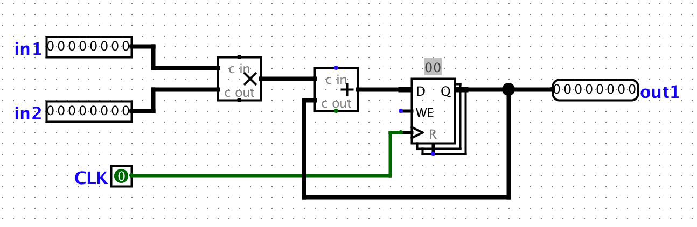

Lab 6: CPU, Pipelining
Deadline: Monday, March 14, 11:59:59 PM PT
Setup
In your labs directory, pull the files for this lab with:
Like Lab 5, all the work in this lab will be done using the digital logic simulation program Logisim Evolution.
Some important warnings before you begin:
- Logisim is a GUI program, so it can't easily be used in a headless environment (WSL, SSH, etc.). We recommend running it in a local environment with a GUI, Java 9+, and Python 3.6+. If your local system is macOS or Linux you're probably all set. If you're on Windows, use
Git Bash, which runs on Windows with GUI support. - Please use the version of Logisim that we distribute, since it is different from other versions on the internet (bugfixes and course-specific stuff)
- Don't move the staff-provided input/output pins; your circuit can't be tested properly if the pins move. If your circuit doesn't pass the tests and you think it is correct, check that your circuit fits in the corresponding harness in
tests/ex#-test.circ - Logisim doesn't auto-save your work. Remember to save (and commit) frequently as you work!
Exercise 1 - Constructing Immediates
As we have seen in lecture, there are five types of immediates in RISC-V: I-type, S-type, B-type, U-type, and J-type. In this exercise, you will be implementing the S-type immediate generator. ex1.circ will take as an input a 32-bit RISC-V store instruction. It should output the sign-extended 32-bit immedate value of the instruction. Constructing the immediate value will require the use of splitters. You can find the summary of how splitters work under the Advanced Logisim Features section in Lab 5.
Action Item
ex1.circ will take in a 32-bit RISC-V store instruction. Your job is to modify the circuit so that it outputs the 32-bit sign-extended immediate value of the instruction. You may assume that the instruction is always a store instruction.
Testing
Open a local terminal session and go to the lab06 folder. We've provided tests for Exercise 1, which you can run with python3 test.py. Your Exercise 1 circuit is run in a test harness circuit (tests/ex1-test.circ), and its output is compared against the reference output for that test (tests/reference-output/ex1-test.out). In the output file, each column corresponds to an input/output pin on the main circuit, and each row shows a set of inputs and the corresponding outputs the circuit produced. If your circuit output (tests/student-output/ex1-test.out) is different, you can check it against the reference output file; the diff command may help. New: The output files are now in csv format to make it easier for you to read.
Exercise 2 - Constructing the BrUn Control Signal
The BrUn control signal is used to tell the branch comparator whether the branch comparison is being performed on signed or unsigned numbers. BrUn is set to 1 if the comparison is being performed on unsigned numbers, and it is set to 0 if the comparison is being performed on signed numbers. If the branch is beq or bne, or the the instruction is not a branch instruction, we don't care about the value of BrUn, so you can set it to either 0 or 1 (make sure you understand why).
We've provided you with the answers to the following questions to help you with your implementation.
Which field of the instruction identifies the type of branch?
funct3Does the opcode field matter?
No. The opcode field does not matter in this case since the BrUn signal is 'don't care' for all non-branch instructions. We can simply output a 1 if the funct3 field corresponds to the funct3 field of the unsigned branch instructions.Constants and comparators will be very helpful for this exercise. The constants can be found in the 'Wiring' library. You can choose the value of the constant in the 'Properties' section in the bottom left window. You can also change the number of bits that are used to represent the constant in the 'Properties' section.
Comparators have two inputs and are used to determine if the first input is less than, equal to, or greater than the second input. They can be found in the 'Arithmetic' library. You can select the size of the inputs and whether the comparison is unsigned or 2's complement in the 'Properties' section in the bottom left window.
Action Item
ex2.circ takes as an input a 32-bit RISC-V instruction and outputs the value of the BrUn control signal. Your job is to modify the circuit so that it properly generates the value of BrUn. The input instruction may or may not be a branch instruction.
Testing
Open a local terminal session and go to the lab06 folder. We've provided tests for Exercise 2, which you can run with python3 test.py. Your Exercise 2 circuit is run in a test harness circuit (tests/ex2-test.circ), and its output is compared against the reference output for that test (tests/reference-output/ex2-test.out). In the output file, each column corresponds to an input/output pin on the main circuit, and each row shows a set of inputs and the corresponding outputs the circuit produced. If your circuit output (tests/student-output/ex2-test.out) is different, you can check it against the reference output file; the diff command may help. New: The output files are now in csv format to make it easier for you to read.
Exercise 3 - Inefficiencies Everywhere
For this exercise, we can assume that registers initially carry the value zero. We will be using the lab file ex3.circ, which should have a subcircuit called non_pipelined which looks something like this:

This circuit simply takes two inputs, multiplies them together, and then adds the result to the current state value. For this circuit, let the propagation delay of an adder block be 45ns and the propagation delay of a multiplication block be 60ns. The register has a CLK-to-Q delay of 10ns, setup time of 10ns, and hold time of 5ns. Assume that both inputs receive their data from registers (so the inputs arrive CLK-to-Q after the rising edge).
Action Item
- Calculate the length of the critical path of this circuit in ns. Put this number in ex3.txt without units.
Exercise 4 - Pipe that Line
We want to improve the performance of this circuit and let it operate at a higher clock rate. In order to accomplish this, we want to have two stages in our pipeline: a multiplication stage and an addition stage, in that order.
To pipeline the circuit, we need a register to hold the intermediate value of the computation between pipeline stages. This is a general theme with pipelining.
In order to check that your pipelining still produces correct outputs, we will consider the outputs from the circuit "correct" if and only if it corresponds to the sequence of outputs the non-pipelined version would emit, but now the circuit will have a leading zero. This leading zero occurs because the second stange of the pipeline is "empty" in the first cycle.
To view the inputs to the circuit and the corresponding outputs for each cycle, take a look at reference-output/ex4-test.out. The output is 00000000 for cyle zero because nothing has moved through the pipeline yet. Cycle zero is essentially just printing out the starting state of the circuit. The output is 00000000 for cycle one because the second stage of the pipeline is "empty" in the first cycle.
We discussed that if an instruction depends on the output of a previous instruction, we need to either insert a pipeline "bubble" (or several) or include forwarding logic to ensure that the output of the first instruction is ready to be an input to the second. As a reminder, a bubble purposely delays an instruction in the pipeline.
For this exercise, ONE instruction consists of BOTH an addition and a multiplication. The addition and multiplication are NOT two separate instructions. Instead, they are two separate stages in the pipeline, similar to how EX and MEM are two separate stages in a pipeline that operate on the same instruction with EX operating on the instruction before MEM operates on the instruction second. We do not have any bubbles in this particular circuit because none of the individual instructions depend on each other.Why are such "bubbles" unnecessary for this particular circuit?
Action Item
- In
ex4.circ, pipeline the circuit found inex3.circ - Calculate the critical path of this pipelined circuit in ns. Put this number on the first line of ex4.txt without units.
- Calculate the maximum clock rate for this pipelined circuit in MHz. Put this number on the second line of ex4.txt without units.
Testing
Open a local terminal session and go to the lab06 folder. We've provided tests for Exercise 4, which you can run with python3 test.py. Your Exercise 4 circuit is run in a test harness circuit (tests/ex4-test.circ), and its output is compared against the reference output for that test (tests/reference-output/ex4-test.out). In the output file, each column corresponds to an input/output pin on the main circuit, and each row shows a set of inputs and the corresponding outputs the circuit produced. If your circuit output (tests/student-output/ex4-test.out) is different, you can check it against the reference output file; the diff command may help. New: The output files are now in csv format to make it easier for you to read.
Exercise 5 - Lab 6 Feedback
We are working to improve the labs for next semester, so please fill out this survey to tell us about your experience with Lab 6. The survey will be collecting your email to verify that you have submitted it, but your responses will be anonymized before the data is analyzed. Thank you!
Exercise 6 - Mid Semester Survey
Congratulations on making it halfway through 61C! We request that you provide feedback on how the course is being run so we can better meet your learning needs for the remainder of the course. This feedback survey is only collecting emails to verify that you have completed it. When the results are analyzed, the data will be anonymized. The content of your responses will not affect your grade.
Submission
Save, commit, and push your work, then submit to the Lab 6 assignment on Gradescope.